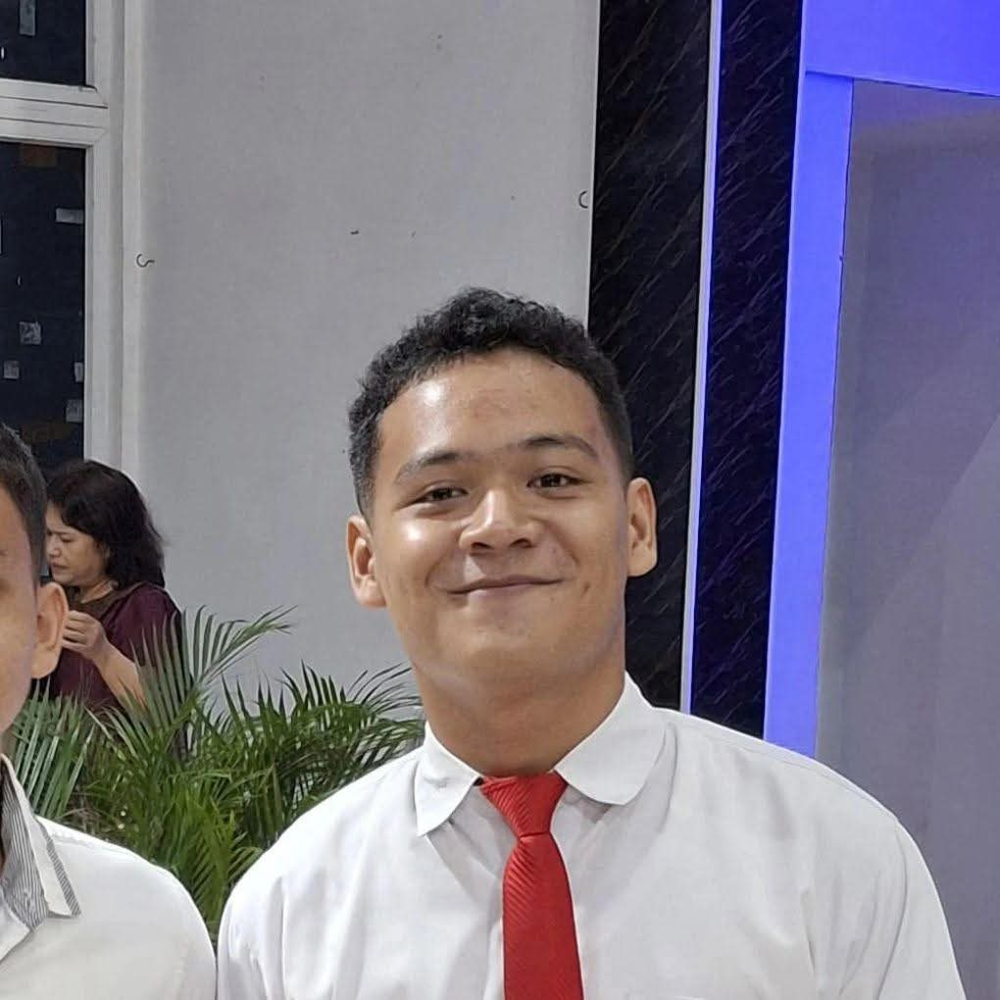

🎧 Music
From old classics to modern pop.
Digel.A little space on the internet |
|||||||||||||||||
HomeHalo! Selamat datang di DIGEL (Digital Rigel), sebuah ruang kecil di internet milik saya. MeNama saya Rigel Rizky Aditya Panjaitan. Saya adalah mahasiswa Teknologi Informasi di Universitas Sumatera Utara yang berasal dari Asahan. Saya orangnya cukup penasaran dengan banyak hal, penyuka musik, dan suka menemukan hal-hal seru di sekitar.  Why Information TechnologySaya tertarik dengan teknologi dan saya suka musik. Jadi, saya tertarik ketika keduanya bertemu. My Current Operating SystemA highly scientific analysis of my current state
Things I Like🎧 MusicFrom old classics to modern pop. 🎬 MoviesGive me a good plot twist. 💻 TechnologyCurious about how things work. MusicBeberapa musisi favorit saya yang sering saya dengarkan:
MoviesBeberapa film favorit yang berkesan:
RANDOM FACTS
|
|||||||||||||||||